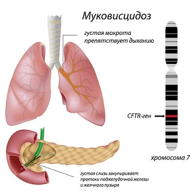
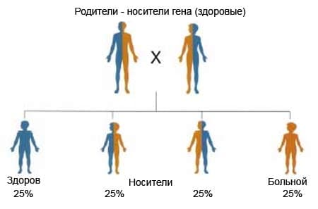

Муковисцидоз — болезнь, вызванная дефектом одного из генов, передающимся по наследству. На данный момент в США живут около 30 000 детей и взрослых, страдающих муковисцидозом, и ежегодно выявляется около 1000 новых случаев. Большинству детей с муковисцидозом диагноз ставят примерно в двухлетнем возрасте. У очень небольшого количества людей муковисцидоз остается невыявленным до подросткового возраста и позже.
СИМПТОМЫ
Существует несколько общих симптомов муковисцидоза — они перечислены ниже, — хотя появления и выраженность их очень вариабельны:
• отсутствие стула (мекония) у новорожденного в первые день-два жизни;
• у младенцев может быть светло-бурый или очень светлый стул, часто с неприятным запахом;
• частые респираторные инфекции, такие как синуситы, бронхиты, пневмонии;
• постоянные или длительные кашель или хрипы;
• недостаточная прибавка в весе у младенца или ребенка постарше;
• небольшой рост;
• утомляемость;
• постоянная диарея;
• кожа имеет соленый привкус.
ПРИЧИНА
Муковисцидоз вызван дефектом в гене, известном как ген CF. Этот ген управляет выработкой слизи в различных системах. При его повреждении организм производит более густую и липкую слизь, чем требуется. Это вызывает задержку ее в дыхательных и пищеварительных путях и приводит к развитию серьезных, часто опасных для жизни инфекций легких и желудочно-кишечного тракта. Муковисцидоз чаще встречается у выходцев из Северной или Центральной Европы.

ДИАГНОСТИКА
Если у младенца или малыша есть эти признаки, следует заподозрить муковисцидоз. Поговорите со своим врачом, если вас беспокоит наличие их у вашего ребенка, существует несколько видов анализов для подтверждения муковисцидоза. Самым распространенным и самым точным является определение хлоридов пота. Тестирование на муковисцидоз входит в обычный скрининг-тест крови новорожденных. Если анализы подтверждают муковисцидоз, то дальше обследуют желудочно-кишечный тракт, делают анализ кала (копрограмму), оценивают функцию поджелудочной железы и легких (это два наиболее часто поражаемых при муковисцидозе органа).
ЛЕЧЕНИЕ
Ранняя диагностика может увеличить продолжительность и улучшить качество жизни. Несколько десятков лет назад люди с муковисцидозом редко доживали до двадцати лет. Сегодня, даже при самом лучшем лечении, средняя продолжительность их жизни — 37 лет. Однако некоторые доживают и до сорока.
Необходимо обследовать всех членов семьи больного муковисцидозом, чтобы проверить, не являются ли они носителями дефектного гена CF. Для того чтобы муковисцидоз проявился, в его хромосомах должны быть две дефектных копии CF. У людей, являющихся носителями, один дефектный и один нормальный ген CF. У них не будет муковисцидоза, но если и у партнера тоже будет дефектный ген CF, у их детей может быть муковисцидоз. |

Лечение муковисцидоза требует комплексного подхода и наблюдения нескольких специалистов. Во многих странах сейчас есть специализированные клиники для больных муковисцидозом. Существует много вариантов лечения, в зависимости от клинических проявлений и их тяжести. Вот некоторые из возможных методов:
ОТДАЛЕННЫЕ ОСЛОЖНЕНИЯ
К сожалению, как было сказано выше, средняя продолжительность жизни больного муковисцидозом на сегодня — 37 лет.
Повторимся: лечение муковисцидоза должно быть индивидуальным. Поговорите со специалистом по муковисцидозу, если ваш ребенок страдает этим заболеванием. |
При рано начатом и активном лечении качество жизни можно значительно улучшить. Наиболее распространенные осложнения муковисцидоза — повторяющиеся инфекции легкого и повреждения легких, хроническая дыхательная недостаточность, заболевания печени, остановка сердца, диабет.
Здоровье ребенка от докторов Сирс / Сирс У. и др.